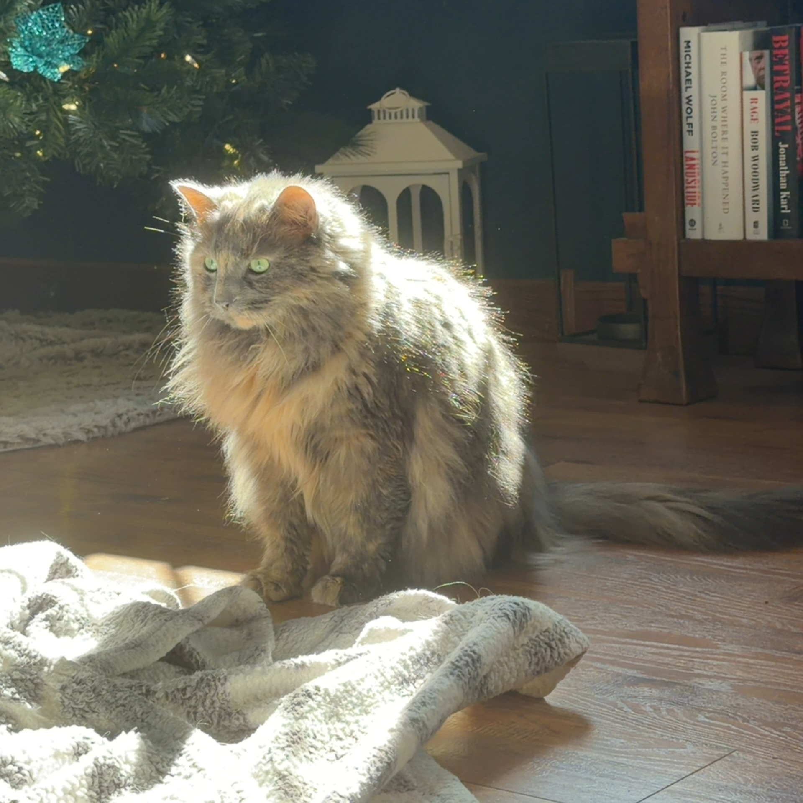

Meet Stormy
- Breed: Long Haired Dilute Tortoiseshell
- Age: 4 years old
- Education: PHD in Science
- FAVORITE THING: Going outside & getting pets
About Cat Translator
Cat Translator converts English into two distinct feline languages: Cat and Stormy. Each word in the dictionary maps to a specific cat sound. Numbers, digits, and color names always pass through unchanged.
Cat Language
The standard cat dialect. Every known English word maps to a unique cat sound — meows, trills, hisses, chirps, purrs, and more.
There's a catch: each word has a 50/50 chance of simply becoming "Meow" instead of its real translation. Cats don't always feel like cooperating.
Stormy Language
Stormy is an extended form of Cat. Every vowel cluster in a cat word gets stretched out by four extra characters, turning "Meow" into "Meoooooow" and "Purrrr" into "Purrrrrrrrrr".
Stormy also has its own exclusive vocabulary — words that exist only in Stormy and have no Cat equivalent. These include intense emotional states, curse words (censored), and Stormy-only concepts like zoomies, chaos, and betrayal. Stormy special words always translate fully — the 50/50 rule does not apply to them.
Color Coding
Output words are color-coded — no labels, just color:
Tangerine — standard cat word
Purple — stormy extended word
Red — curse word (always censored)
Amber — intense emotion (stormy only)
Green — stormy-only vocabulary
Grey — low confidence / unknown word
Black — number or color name (passed through)
Word Limit
English input is capped at 100 words when translating into Cat or Stormy. The counter in the input pane tracks your usage. No limit applies when going Cat or Stormy → English.
Reverse Translation
Type Cat or Stormy sounds into the left pane to get English back out. Use the swap button (⇄) to flip sides automatically.